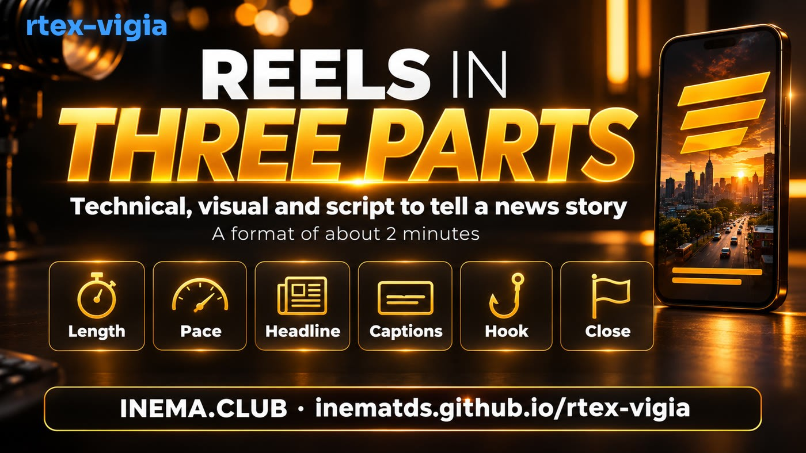

With rtex-vigia, your news story becomes a reel script built to hold attention
You find a powerful story, tell it any old way, and people scroll right past. Here, AI helps you put the script together. You take care of filming and editing.
rtex-vigia, or rtexv, is a short vertical video format for telling a news story or sharing a discovery in about 2 minutes. It’s for creators who want to explain something important without losing people along the way. Here you’ll find the rules, a script template, and examples that are already published. It doesn’t make the video for you: you copy a prompt into your AI, get a script, then film and edit it yourself. To film, use your phone or an avatar, a digital version of someone speaking.

The benefit
You stop just reporting facts and start telling a story
The facts can stay the same. What changes is the order, the pacing, and the reason to keep watching.
😴 Without a format
You start by explaining the background, the screen stays still, and the video ends with “that’s it, folks.”
🔥 With rtex-vigia
You open with the strongest fact, keep the screen moving, and end with a question that makes people think.
🧭 You know what comes next
Every video follows the same sequence, so you don’t have to start from scratch.
⏱️ Just the right length
About 2 minutes: enough time to explain without rambling.
✅ More trustworthy
Numbers only make it in after they’re checked, and the limits of the story are clear when there are any.
The format
Three parts: technical, visual, and script
The INEMA team, a free AI education project, measured 16 reels made with this format, including the 3 examples below. Here’s what they have in common.
📐
Technical
Vertical: fills the phone screen in high definition.
About 2 minutes: the reels measured ranged from 1min45 to 2min18.
Fast, clear delivery: around 200 words per minute. At a normal pace, write about 300 words for a 2-minute video.
Keep the screen moving: in our videos, something changes every 2 or 3 seconds. If you’re editing on your own, you can go slower.
🎨
Visual
Opening: headline at the top and speaker at the bottom, each taking half the screen.
Then: the image fills the screen and the speaker’s face moves to the corner.
Captions: 2 or 3 words at a time, with one highlighted.
Images: realistic places and objects, with big numbers. Never use AI to generate another real person’s face.
Ending: the website on screen and a question.
✍️
Script
Hook: the strongest fact, speaking directly to you.
Proof early on: a number or someone respected in the field.
The story: how it began and what was holding things up.
The turning point: the detail no one expected, explained with a simple comparison.
Keep it grounded: explain the limits of the story, when there are any.
Ending: the takeaway, an invitation, and a question.
In the spoken version, these 6 parts become 7 to 10 short blocks.
A hook in this format
“If the internet went down right now, what would be left on your computer?”
Today: you film a quick take and the video feels all over the place.
With the format: you fit the story into the script’s six parts.
🧪 It’s a tricky topic
Today: the explanation gets long and technical.
With the format: a simple comparison does the job, like saying a virus only gets into the right bacterium, the way a key fits a lock.
💬 No one comments
Today: the video just ends.
With the format: the ending asks a question about the life of the person watching.
Examples
See the format in action
Three published reels about AI in healthcare, at work, and at home. So far, we’ve used the format for these topics. For another subject, swap in the story and keep the sequence. The speaker in these videos is an avatar of Nei Maldaner from INEMA. Tap to watch on YouTube.
You don’t need to install anything or know how to code. AI gives you the text; you film and edit the video.
1
Open your AI
It could be Claude, ChatGPT, or another tool that can read web pages.
2
Paste the prompt
Copy the text below, which already includes the rules, and answer its questions.
3
Review
Open the sources, check the facts, and adjust the wording to sound like you.
4
Film and edit
Film one block at a time or use a teleprompter app that scrolls the text on screen. Then put the scenes together in your editor.
I want a reel script in the rtex-vigia format.
Format rules:
- About 2 minutes at my speaking pace, in 7 to 10 short blocks.
- Sequence: open with the strongest fact, speaking directly to “you”; give proof near the start; tell the story, including how it began and what was holding things up; explain the turning point with a simple comparison; mention the limits of the story, if there are any; and close with a takeaway, an invitation to visit my website or profile, and a real question.
- Visuals: a short headline, captions of 2 or 3 words at a time, realistic images, and big numbers. Never use AI to generate another real person’s face.
If you can open them, look at these examples. If you can’t, let me know and follow only the rules above:
https://github.com/inematds/rtex-vigia/blob/main/exemplos/cirurgia-raio-x/roteiro.md
https://github.com/inematds/rtex-vigia/blob/main/exemplos/so-tres-ferramentas/roteiro.md
https://github.com/inematds/rtex-vigia/blob/main/exemplos/ia-sem-internet/roteiro.md
Before you write, ask me these questions and wait for my answers:
1. What’s the subject?
2. What facts have I already researched, and where did they come from?
3. Who is the video for?
4. Which website or profile do I want to send people to?
5. Will I speak at a normal or fast pace?
6. Do I have something I’ve written or an audio transcript you can use to match the way I speak?
Then write the script in your own words and in my voice, as continuous text, block by block, and give the estimated reading time.
For each block, list the on-screen elements: the headline, the highlighted number, if there is one, and an image I can legally use, including where to find it.
Check numbers and dates against reliable sources and show me the links. If you can’t search the internet, say so and don’t make up sources or links. Keep what I researched that isn’t online and label it “my own research” for me to confirm. If a source contradicts something, tell me before changing it.
Don’t publish anything or change any files without my say-so.
📱 Editing on your own phone? Keep it simple
Editor: use an app with automatic captions, such as CapCut or InShot, and show 2 or 3 words at a time.
Recording: speak full-screen. The split screen and face in the corner are optional. If you want to do that, look for the video overlay feature in your editor.
Images: use your own photos, free stock images, or AI-generated images without a real person’s face. Use newspaper photos only with permission.
Pacing: our videos change something on screen every 2 or 3 seconds because an automated system puts them together. On your own, start with one image for each important idea, and keep the hook, turning point, and ending.
🛠️ Are you technical?
If you want to check scripts automatically, you’ll find the instructions on the project’s technical page.
How we measured
Measurements for the format
These numbers show how 16 reels were put together. They don’t measure audience size or watch time.
16
reels measured
2min01
typical length
2,7 s
between on-screen changes
Questions
Before you try it
Does this guarantee views?
No. The format structures the video to hold attention, but results depend on the topic, the audience, and the platform.
Do I need to code?
No. The ready-to-use prompt gets your AI to prepare the script.
Do I need an avatar?
No. You can film with your phone. Headlines, captions, and images go in later, during editing.
How much does it cost?
The format is free. You only pay if you use a paid tool to film or edit.
What story would you tell first in this format? Learn more for free at inema.club, right on the internet.